13 Simulations géostatistiques de variable catégorielle
Ce chapitre présente les principales méthodes de simulation de faciès utilisées en géostatistique. Il couvre les approches classiques fondées sur les pixels, la modélisation d’objets et les statistiques multipoints. La simulation séquentielle d’indicatrices, les simulations gaussiennes tronquées ainsi que des méthodes plus avancées reposant sur des images d’entraînement ou des modèles conceptuels y sont notamment abordées. Chaque technique est décrite en mettant en évidence ses fondements théoriques, ses avantages, ses limites et ses domaines d’application. Le chapitre présente également les différentes stratégies permettant de conditionner les simulations aux faciès observés en forage. L’objectif consiste à fournir les bases théoriques et pratiques nécessaires à la mise en œuvre, à l’analyse et à l’interprétation des simulations de faciès dans divers contextes géoscientifiques. Plusieurs exemples d’application tirés de la littérature scientifique concluent le chapitre.
À la fin de ce chapitre, vous serez en mesure de :
Expliquer les principes et le fonctionnement des principales méthodes de simulation de faciès, y compris les approches fondées sur les pixels, la modélisation d’objets et les statistiques multipoints;
Distinguer les fondements théoriques, les avantages, les limites et les domaines d’application de ces approches;
Décrire le rôle des variables indicatrices, des covariances associées et des règles de codage dans la représentation et la simulation des faciès (méthodes indicatrices et tronquées);
Interpréter des réalisations de faciès simulées à partir de leurs paramètres de modélisation, de leurs règles de codage ou de leurs images d’entraînement;
Mettre en œuvre le conditionnement des simulations de faciès aux observations disponibles, notamment aux données de forage;
Comparer des exemples d’applications issus de la littérature afin d’évaluer la pertinence des méthodes dans divers contextes géoscientifiques.
Ce chapitre s’appuie principalement sur l’ouvrage de référence suivant:
Pyrcz, M. J., & Deutsch, C. V. (2014). Geostatistical Reservoir Modeling. Oxford University Press.
La caractérisation du sous-sol repose sur l’observation de propriétés physiques, hydrauliques, mécaniques et géochimiques dont la distribution spatiale est contrôlée, à des degrés variables, par la géologie. La perméabilité d’un aquifère, la porosité d’une formation, la densité de fractures d’un massif rocheux ou le potentiel de drainage minier acide ou neutre contaminé d’un parc à résidus ou d’une halde à stériles dépendent notamment de la nature des matériaux, de leur mode de mise en place et des transformations qu’ils ont subies. Les processus de dépôt, de déformation, de fracturation, de circulation des fluides et d’altération produisent ainsi des hétérogénéités qui ne sont généralement ni aléatoires ni uniformément réparties.
La représentation de cette organisation géologique fait souvent appel à des variables catégorielles décrivant, par exemple, la lithologie, la stratigraphie, le faciès ou le degré d’altération. Un faciès regroupe des matériaux présentant un ensemble de caractéristiques communes, telles que la composition, la texture, les structures ou les conditions de formation. La classification retenue dépend toutefois de l’objectif de la modélisation. Des unités géologiques distinctes peuvent, par exemple, être regroupées en hydrofaciès lorsqu’elles présentent des comportements hydrodynamiques comparables. À l’inverse, une même unité lithologique peut devoir être subdivisée si ses propriétés varient suffisamment pour influencer les résultats du modèle.
Dans un modèle géologique ou hydrogéologique, la distribution des catégories définit l’architecture dans laquelle les propriétés continues sont ensuite attribuées ou simulées. La géométrie, les proportions et la connectivité des unités peuvent alors avoir une influence directe sur les écoulements, le transport, la stabilité mécanique ou les réactions géochimiques. Une représentation adéquate des faciès ne consiste donc pas uniquement à reproduire leurs proportions globales : elle doit également préserver les relations spatiales pertinentes pour le phénomène étudié.
La simulation de faciès vise à produire plusieurs configurations catégorielles compatibles avec les données disponibles et avec un modèle de continuité ou d’organisation spatiale. Ces réalisations permettent d’examiner l’incertitude associée à la géométrie des unités et d’en évaluer la propagation vers les propriétés continues et les réponses calculées par les modèles numériques.
Les méthodes de simulation ne reproduisent toutefois pas toutes les mêmes caractéristiques. Certaines décrivent principalement les proportions et la continuité à deux points, tandis que d’autres cherchent à représenter des géométries, des séquences, des objets ou des relations spatiales plus complexes. Le choix de la méthode dépend donc de la structure géologique à reproduire, de la quantité et du type de données disponibles, ainsi que de l’échelle et de l’objectif du modèle. Les dépôts stratifiés, les formations glaciaires, les réseaux de fractures, les corps minéralisés et les massifs cristallins ne peuvent généralement pas être décrits à partir des mêmes hypothèses géométriques.
Ce chapitre présente les fondements des principales approches de modélisation et de simulation des variables catégorielles, leurs hypothèses, leurs domaines d’application et leurs principales limites. Des exemples tirés de la littérature illustrent la manière dont ces méthodes représentent les proportions, la continuité, la géométrie et la connectivité des unités géologiques.
13.1 Modélisation de faciès basée sur des cellules
La modélisation par cellules, ou approche pixel-based, découpe l’espace en une grille régulière et attribue à chaque cellule une catégorie : le faciès. L’étape est déterminante, car les propriétés physiques du milieu sont corrélées à ces unités. Un faciès argileux porte une conductivité faible, un faciès sableux une conductivité élevée. En fixant d’abord l’architecture des faciès, on contraint la distribution des paramètres physiques, puis on simule, plus finement, l’écoulement dans un aquifère, par exemple.
L’approche s’appuie sur le variogramme pour décrire la structure spatiale. Elle s’organise autour de deux méthodes : la simulation séquentielle d’indicatrices (sequential indicator simulation, SIS) et la simulation gaussienne tronquée (truncated Gaussian simulation, TGS).
Simulation séquentielle d’indicatrices (SIS)
La SIS modélise la présence ou l’absence de faciès à partir de variables binaires (0 ou 1). Le principe reprend celui de la simulation séquentielle gaussienne (sequential Gaussian simulation, SGS) des variables continues, mais l’adapte aux variables catégorielles.
Algorithme
C’est l’équivalent catégoriel de la SGS. On visite les points de la grille dans un ordre aléatoire et, à chaque emplacement, on simule un faciès parmi les \(K\) possibles. Seule la loi de tirage change : au lieu d’une gaussienne conditionnelle, on tire dans une distribution catégorielle obtenue par krigeage d’indicatrices. Concrètement, on krige l’indicatrice de chaque faciès pour estimer sa probabilité de présence au point courant. Les \(K\) probabilités forment un vecteur qu’on normalise à somme 1, puis on tire un faciès selon cette loi. Comme en SGS, le faciès simulé rejoint aussitôt les données conditionnantes, et on passe au point suivant du chemin.
Soit un champ aléatoire catégoriel \(Z(\mathbf{x})\) prenant \(K\) états discrets \(\{s_1, s_2, \dots, s_K\}\), soit les \(K\) faciès possibles. On dispose de \(N\) observations \(z(\mathbf{x}_i)\), avec \(i = 1, \dots, N\), et on veut simuler le champ aux nœuds d’une grille \(\{\mathbf{x}_j, j = 1, \dots, n\}\) conditionnellement aux données. Le processus se déroule ainsi.
- Codage en indicatrices.
Transformer les données catégorielles en indicatrices \(i(\mathbf{x}_i; s_k)\) pour chaque faciès \(s_k\) : \[i(\mathbf{x}_i; s_k) = \begin{cases} 1 & \text{si } z(\mathbf{x}_i) = s_k, \\ 0 & \text{sinon.} \end{cases}\]
- Chemin aléatoire.
Définir un chemin qui visite chaque nœud \(\mathbf{x}_j\) une seule fois.
- Estimation des probabilités locales.
Au nœud courant \(\mathbf{x}_j\), estimer la probabilité conditionnelle de chaque faciès par krigeage des indicatrices, \[p^*(\mathbf{x}_j; s_k \mid (n)) = \mathbb{P}(Z(\mathbf{x}_j) = s_k \mid \text{données observées et simulées}),\] soit l’estimateur de krigeage de l’indicatrice du faciès, \[p^*(\mathbf{x}_j; s_k) = \sum_{\alpha=1}^{n} \lambda_\alpha^{(k)}\, i(\mathbf{x}_\alpha; s_k),\] où les poids \(\lambda_\alpha^{(k)}\) résolvent le système de krigeage construit sur le variogramme de l’indicatrice du faciès \(s_k\) (krigeage d’indicatrices, voir le chapitre correspondant).
- Correction et normalisation.
Le krigeage des indicatrices ne garantit pas que les \(p^*\) respectent les axiomes de probabilité — certaines valeurs sortent de \([0,1]\), leur somme s’écarte de 1. On impose donc \[\sum_{k=1}^{K} p^*(\mathbf{x}_j; s_k) = 1 \quad \text{et} \quad p^*(\mathbf{x}_j; s_k) \in [0, 1]\] par une correction des relations d’ordre : les probabilités négatives passent à 0, celles au-delà de 1 à 1, puis on renormalise pour que la somme vaille 1. Cette correction déforme un peu la structure imposée par les variogrammes d’indicatrices : c’est pourquoi la SIS ne les reproduit en général pas exactement (voir les remarques plus bas).
- Tirage de Monte-Carlo.
Construire la fonction de répartition locale et tirer selon la loi uniforme \(U[0, 1]\). Le faciès \(s_k\) dont l’intervalle contient le tirage est attribué au nœud \(\mathbf{x}_j\).
- Mise à jour.
Ajouter la valeur simulée \(z(\mathbf{x}_j)\) aux données conditionnantes des nœuds restants, puis reprendre à l’étape 3.
La Figure 13.1 illustre le déroulement séquentiel sur un cas simplifié. Le modèle comporte deux faciès dont la continuité spatiale suit un variogramme sphérique isotrope de portée 10 pixels, sur une grille de \(40 \times 40\). L’animation rend visible la nature séquentielle : les cellules sont simulées l’une après l’autre le long d’un chemin aléatoire, chaque nouvelle valeur s’ajoutant aux données de conditionnement. La probabilité globale du faciès rouge est de 40 %, celle du faciès vert de 60 %. À gauche, la construction séquentielle du champ de faciès; à droite, la probabilité conditionnelle de chaque catégorie. À chaque étape, une valeur est tirée selon \(U[0, 1]\), et le faciès dont l’intervalle de probabilité cumulée contient ce tirage est affecté à la cellule.
Remarques sur la méthode
Sur le plan spatial, la SIS autorise toutes les transitions entre faciès, car les probabilités de transition entre deux catégories \(s_k\) et \(s_{k'}\) ne sont soumises à aucune règle géologique. La probabilité de transition à une distance \(\mathbf{h}\),
\[\mathbb{P}(Z(\mathbf{x} + \mathbf{h}) = s_{k'} \mid Z(\mathbf{x}) = s_k),\]
ne dépend que des variogrammes des indicatrices et des données locales. Rien n’interdit un contact : des faciès géologiquement incompatibles peuvent se retrouver côte à côte.
De plus, la méthode reproduit les variogrammes des indicatrices de chaque faciès \(s_k\) pris isolément, mais ignore les covariances croisées entre les indicatrices. L’estimation des probabilités suppose en effet l’indépendance des fonctions indicatrices, alors qu’elles sont spatialement corrélées :
\[\operatorname{Cov}[i(\mathbf{x}; s_k), i(\mathbf{x} + \mathbf{h}; s_{k'})] \approx 0, \quad \forall k \neq k'.\]
Les relations spatiales asymétriques ou complexes — dépôt préférentiel d’un faciès sur un autre, intrusion mafique dans un encaissant — échappent donc à la SIS. Un voisinage restreint peut également freiner la reproduction des structures à longue portée. Enfin, la nature discrète de la simulation empêche la formation de frontières lisses entre les unités. Le krigeage d’indicatrices donne des probabilités qui sortent parfois de \([0, 1]\); la correction qui les y ramène altère la structure imposée, si bien que la covariance des indicatrices n’est en général pas fidèlement reproduite. Les seules exceptions sont l’effet de pépite pur et la covariance exponentielle en une dimension. Certains modèles, notamment le modèle gaussien, très régulier à l’origine, ne peuvent donc pas être respectés. Malgré ces limites, la SIS reste un standard pour les environnements à géométrie incertaine ou lorsque les données sont rares.
Exemples d’application
La Figure 13.2 présente une réalisation avec les probabilités \(p_1 = 1/3\) (bleu), \(p_2 = 1/2\) (vert) et \(p_3 = 1/6\) (brun), pour un variogramme sphérique de portée \(a = 50\). Toutes les transitions possibles s’y produisent, de façon isotrope.
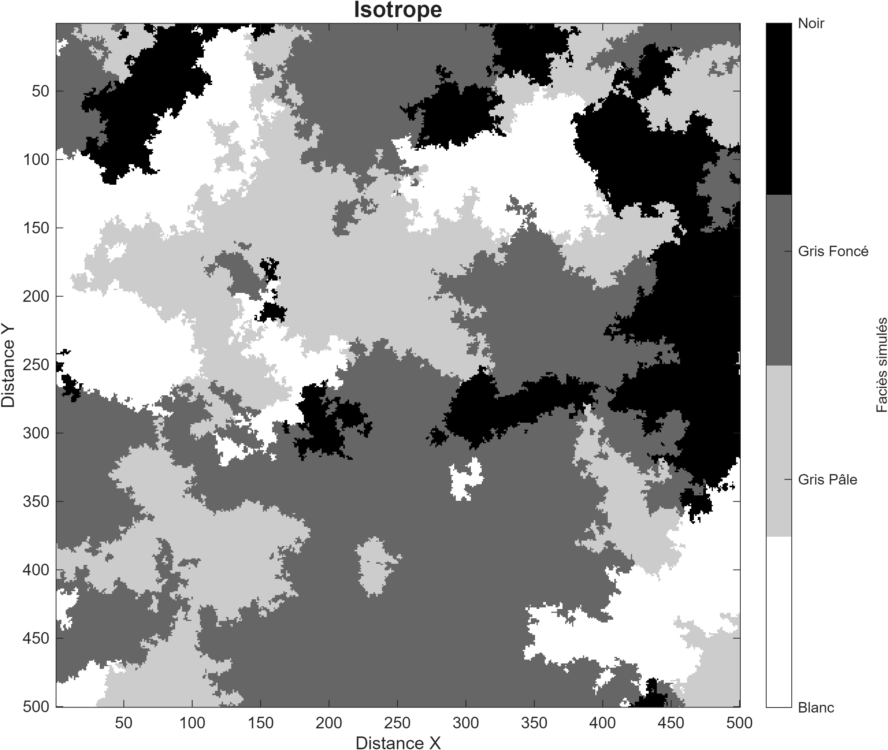
La Figure 13.3 montre une simulation à variogramme sphérique anisotrope (\(a_x = 200\), \(a_y = 10\)). L’étirement des formes rapproche l’image d’unités sédimentaires réalistes, mais les transitions entre faciès restent celles du cas précédent.
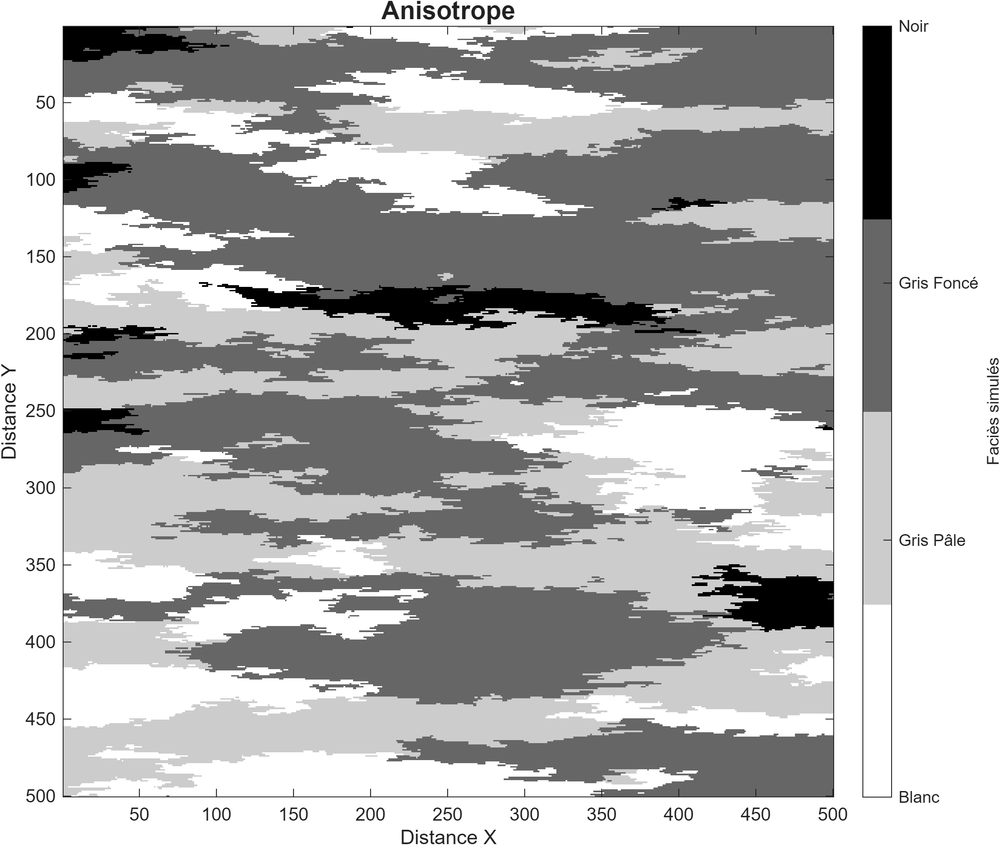
Enfin, la Figure 13.4 présente une réalisation 3D plus complexe. La méthode brille là où les forages (lignes noires) sont rares et où la géométrie exacte des corps est difficile à poser a priori. C’est un exemple qui reproduit un réservoir pétrolier.
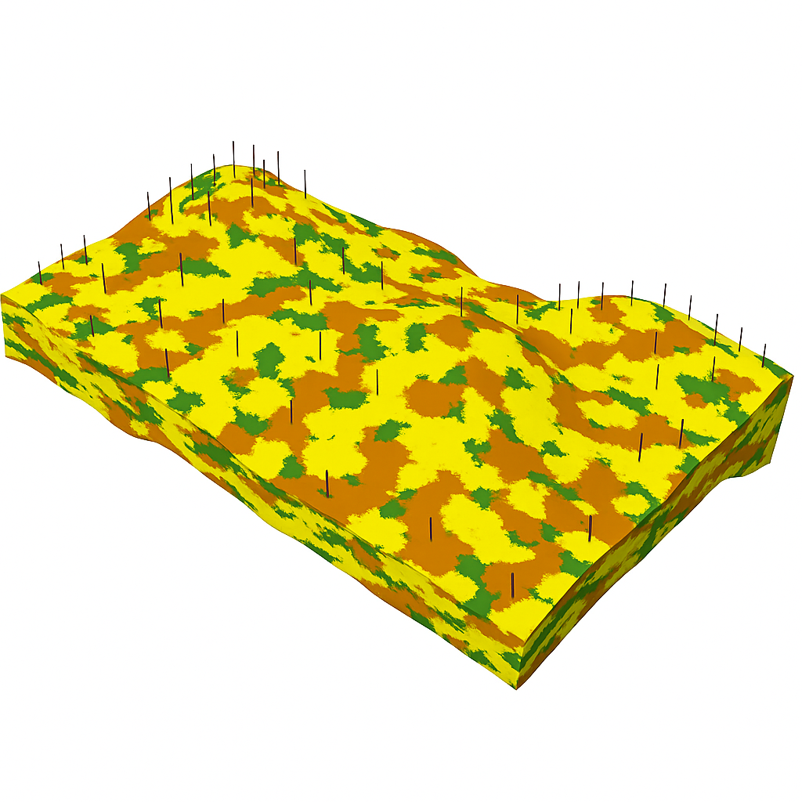
🧮 Atelier interactif 13.1 — Animation SIS
Lancez l’animation : la grille se remplit pixel par pixel le long d’un chemin aléatoire. Chaque pixel est échantillonné à partir de la loi locale obtenue par krigeage des indicatrices des voisins déjà simulés. Les proportions réalisées convergent vers les cibles au fil du remplissage.
Méthode par simulations tronquées
Les simulations tronquées génèrent des variables catégorielles à partir de champs continus gaussiens. Le principe est simple : on simule d’abord un ou plusieurs champs gaussiens par une méthode classique (LU, SGS, FFT-MA, bandes tournantes), puis on découpe ces champs continus en catégories à l’aide de seuils ou de zones de codage. On contrôle ainsi les proportions de chaque catégorie, on reproduit la continuité spatiale via le variogramme du champ gaussien, et — selon le modèle — on impose certaines relations spatiales entre faciès (transitions permises ou interdites, proportions variables).
Il y a deux variantes principales : la simulation gaussienne tronquée, qui découpe un seul champ gaussien en intervalles ordonnés; et la simulation plurigaussienne, plus souple, qui combine plusieurs champs gaussiens pour des organisations spatiales plus riches.
Simulation gaussienne tronquée
L’algorithme non conditionnel est assez simple.
- Ordonnancement des faciès.
Les faciès doivent être ordonnés (par exemple F1 < F2 < F3). Cet ordre fixe les transitions possibles : seuls les faciès successifs peuvent être contigus, ce qui interdit une transition directe F1–F3.
- Détermination des seuils gaussiens.
À partir des proportions globales, on calcule les seuils comme quantiles d’une loi normale standard \(\mathcal{N}(0,1)\). Pour \(K\) faciès ordonnés de proportions \(p_1, \dots, p_K\), le seuil séparant le faciès \(k\) du faciès \(k+1\) est \[s_k = \Phi^{-1}\!\left( \sum_{j=1}^{k} p_j \right), \qquad s_0 = -\infty, \quad s_K = +\infty,\] où \(\Phi\) est la fonction de répartition de \(\mathcal{N}(0,1)\). Le faciès \(k\) occupe l’intervalle \((s_{k-1}, s_k]\) du champ latent, que l’on prend de moyenne nulle et de variance unitaire.
- Application des seuils de codage.
On génère une simulation gaussienne non conditionnelle par une méthode classique (LU, SGS, FFT-MA, bandes tournantes). Chaque valeur du champ continu est comparée aux seuils de l’étape 2 : si elle tombe dans l’intervalle du faciès \(k\), la cellule prend ce faciès. Le champ gaussien devient un champ catégoriel, aux proportions voulues et aux relations spatiales dictées par le modèle.
La Figure 13.5 présente un exemple à trois faciès \(F_1\), \(F_2\), \(F_3\), de probabilités \(p_1 = \frac{1}{3}\), \(p_2 = \frac{1}{2}\), \(p_3 = \frac{1}{6}\). Les seuils viennent de la fonction de répartition \(\Phi\) de \(\mathcal{N}(0,1)\). Le premier, \(s_1\), à la transition \(F_1\)–\(F_2\), vaut \(s_1 = \Phi^{-1}(p_1) = \Phi^{-1}\!\left(\frac{1}{3}\right) = -0{,}43073\). Le second, \(s_2\), à la transition \(F_2\)–\(F_3\), cumule les deux premières proportions : \(s_2 = \Phi^{-1}(p_1 + p_2) = \Phi^{-1}\!\left(\frac{5}{6}\right) = 0{,}96742\). Toute valeur gaussienne inférieure à \(s_1\) est codée \(F_1\), entre \(s_1\) et \(s_2\) codée \(F_2\), au-delà de \(s_2\) codée \(F_3\). Avec un variogramme gaussien de portée 50 et ces proportions, on obtient le champ de la Figure 13.6 : la transition de \(F_1\) (bleu) à \(F_3\) (rouge) passe obligatoirement par \(F_2\) (vert), donc \(F_1\) et \(F_3\) ne sont jamais contigus. L’ordre des faciès doit donc respecter les relations observées.
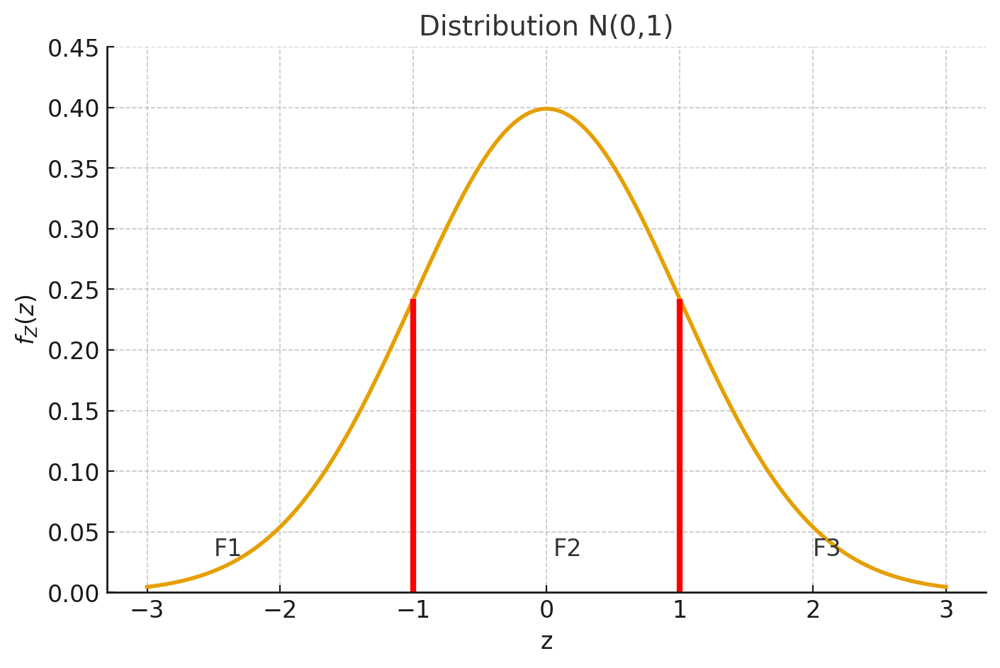
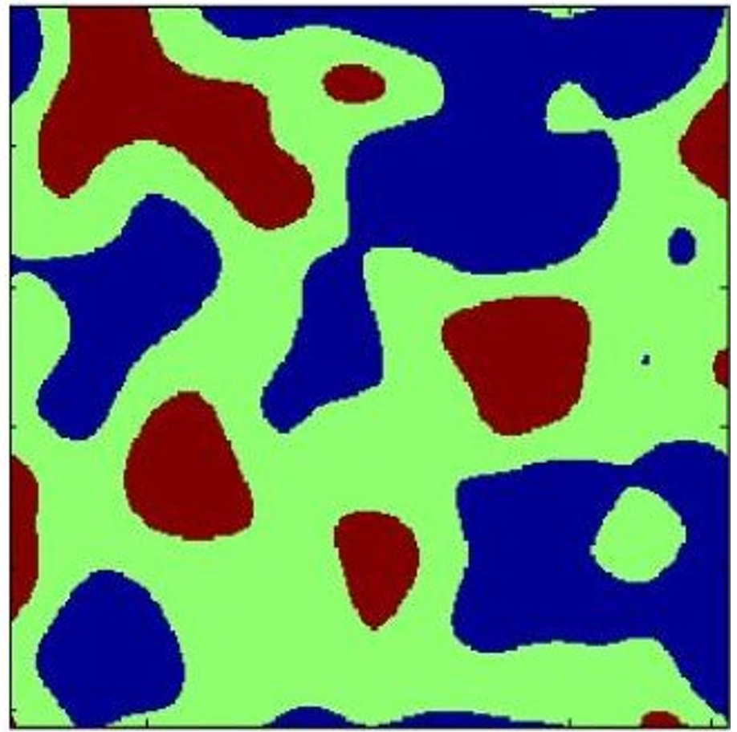
Comment tenir compte des faciès observés aux points d’échantillonnage?
Pour tenir compte des faciès observés, on utilise un échantillonnage de Gibbs. C’est une méthode de Monte-Carlo par chaînes de Markov (MCMC) qui échantillonne une distribution en construisant une chaîne de Markov dont la loi stationnaire est justement la loi cible. Pour une loi \(\pi\) sur un espace \(\Omega\), l’algorithme produit une suite d’échantillons dont la loi limite est \(\pi\).
En TGS, le Gibbs est nécessaire, car les valeurs latentes \(Z(\mathbf{x})\) ne sont pas observables : seules les catégories \(W(\mathbf{x})\), issues de la troncature, le sont. Chaque faciès \(i\) correspond à un intervalle \([s_{i-1}, s_i]\) : si \(\mathbf{x}_\alpha\) appartient au faciès \(i\), alors la valeur latente vérifie forcément \(s_{i-1} < Z(\mathbf{x}_\alpha) \le s_i\). Le Gibbs échantillonne donc, en chaque point observé, une valeur latente \(Z(\mathbf{x}_\alpha)\) compatible à la fois avec la covariance \(C(\mathbf{h})\) et avec les contraintes de troncature des faciès observés.
L’algorithme repose sur des krigeages simples successifs, qui fournissent la loi conditionnelle d’une variable gaussienne en un point. À chaque itération, on met à jour une valeur latente à partir des autres. Les itérations se déroulent ainsi.
Initialisation.
Pour chaque point échantillonné \(\mathbf{x}_i\), tirer au hasard une valeur gaussienne \(Z(\mathbf{x}_i)\) dans l’intervalle du faciès observé : \[ W(\mathbf{x}_i)=k \quad \Longrightarrow \quad Z(\mathbf{x}_i) \in (s_{k-1}, s_k]. \] L’initialisation respecte donc le codage.
- Sélection d’un point.
Choisir un point \(\mathbf{x}_i\) au hasard parmi les \(N\) points à conditionner. Retirer temporairement sa valeur courante \(Z(\mathbf{x}_i)\).
- Estimation de la loi conditionnelle.
Estimer la loi conditionnelle de \(Z(\mathbf{x}_i)\) compte tenu des autres valeurs latentes, \[ Z(\mathbf{x}_i)\,\mid\,Z(\text{reste}) \sim \mathcal{N}(\hat Z(\mathbf{x}_i),\sigma_i^2), \] où \((\hat Z(\mathbf{x}_i),\sigma_i^2)\) viennent du krigeage simple.
- Échantillonnage tronqué.
Comme \(W(\mathbf{x}_i)=k\), tirer une nouvelle valeur de \(Z(\mathbf{x}_i)\) dans la loi normale tronquée à l’intervalle du patron de codage, \[ Z(\mathbf{x}_i) \sim \mathcal{N}(\hat Z(\mathbf{x}_i),\sigma_i^2)\;\text{tronquée à}\;(s_{k-1},s_k]. \]
- Mise à jour.
Remplacer l’ancienne valeur de \(Z(\mathbf{x}_i)\) par la nouvelle.
- Critère d’arrêt.
Vérifier un critère de convergence (nombre d’itérations, stabilité des moments, autocorrélation). Si le critère est satisfait, arrêter; sinon, retourner à l’étape 1.
Au terme des itérations, on obtient des valeurs gaussiennes corrélées selon \(C(\mathbf{h})\) et satisfaisant aux seuils. Le Gibbs produit ainsi un champ latent \(Z(\mathbf{x})\) qui respecte à la fois la structure spatiale imposée par le variogramme et les faciès observés à travers les intervalles de codage.
Simulations plurigaussiennes
Le modèle plurigaussien étend le modèle gaussien tronqué en combinant plusieurs variables gaussiennes corrélées, pour des faciès aux relations spatiales plus complexes. Pour simplifier, on s’en tient à deux champs latents. L’algorithme se résume ainsi.
- Simulation de deux champs gaussiens.
Simuler deux variables gaussiennes \(Z_1\) et \(Z_2\) avec la matrice de covariance \[\mathbf{C}(\mathbf{h})=\begin{bmatrix} C_{11}(\mathbf{h}) & C_{12}(\mathbf{h}) \\ C_{21}(\mathbf{h}) & C_{22}(\mathbf{h}) \end{bmatrix}.\] Chaque champ a son propre variogramme direct, et les deux peuvent être corrélés via les covariances croisées \(C_{12}(\mathbf{h})\) et \(C_{21}(\mathbf{h})\).
- Définition du plan de codage des faciès.
Associer chaque faciès à une zone (rectangle ou autre forme) du plan \((Z_1, Z_2)\). Ce plan encode les relations spatiales voulues (exclusions, transitions obligatoires, voisinages imposés). Les proportions des faciès sont l’intégrale de la densité gaussienne bivariée sur les zones définies.
- Inférence des paramètres.
Calculer les covariances expérimentales des indicatrices et leurs covariances croisées, puis ajuster les modèles de covariance des deux champs latents et leur corrélation pour reproduire au mieux les structures observées.
- Conditionnement aux données observées (échantillonneur de Gibbs).
Pour chaque point d’observation \(\mathbf{x}_i\), appliquer un Gibbs où la loi conditionnelle de \((Z_1(\mathbf{x}_i), Z_2(\mathbf{x}_i))\) vient d’un cokrigeage simple, conditionnellement aux valeurs latentes déjà fixées : calculer la loi normale conjointe conditionnelle \((Z_1, Z_2)\,\mid\,\text{reste}\) par cokrigeage simple; tirer une paire \((z_1, z_2)\) dans cette loi; vérifier qu’elle appartient à la zone du faciès observé; sinon, retirer jusqu’à obtenir une paire compatible; mettre à jour la valeur latente et passer au point suivant. On répète le balayage jusqu’à convergence du Gibbs.
- Simulation conditionnelle finale.
Réaliser une simulation gaussienne conditionnelle complète des champs \(Z_1\) et \(Z_2\) à partir des valeurs obtenues au conditionnement, puis convertir en faciès à l’aide du plan de codage.
La Figure 13.9 présente un patron de codage complexe. Si l’on observe par exemple \(Z_1 = -1\) et \(Z_2 = 1\), le couple \((-1, 1)\) tombe dans le rectangle du faciès \(F_1\), qui est donc attribué. La Figure 13.10 applique ce patron à deux champs gaussiens indépendants. Le champ \(Z_1(\mathbf{x})\) suit un variogramme sphérique isotrope de portée 150 pixels, le champ \(Z_2(\mathbf{x})\) un variogramme sphérique isotrope de portée 260 pixels, sur une grille de 500 × 500. Quand les deux champs sont indépendants, comme ici, la proportion d’un faciès se lit directement comme l’aire de sa zone dans le plan \((Z_1, Z_2)\), pondérée par la densité gaussienne bivariée; une corrélation entre \(Z_1\) et \(Z_2\) déforme cette correspondance.
Les relations spatiales entre faciès sont très complexes, mais le patron impose clairement certaines structures : le faciès \(F_4\) est entièrement contenu dans \(F_3\), tandis que \(F_1\), \(F_2\) et \(F_3\) baignent dans \(F_0\) et ne peuvent donc jamais se toucher.
La Figure 13.11 présente quatre images : une image réelle aux rayons X des pores d’un grès, et trois réalisations PGS qui en reproduisent la structure. Laquelle est la vraie? Celle en haut à gauche. Les simulations sont assez réalistes pour rendre la distinction difficile, voire impossible.
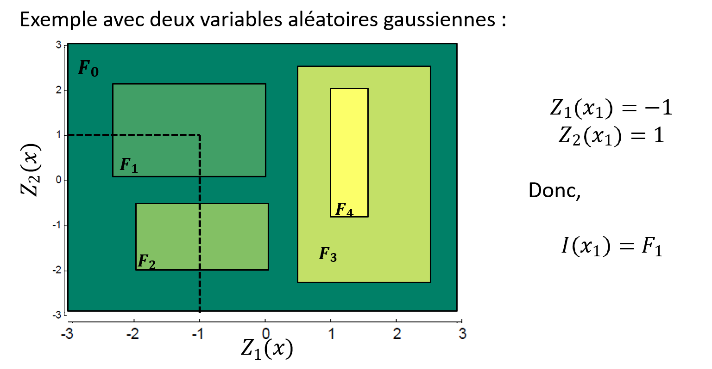
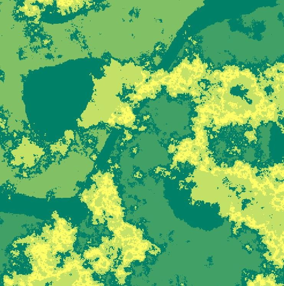
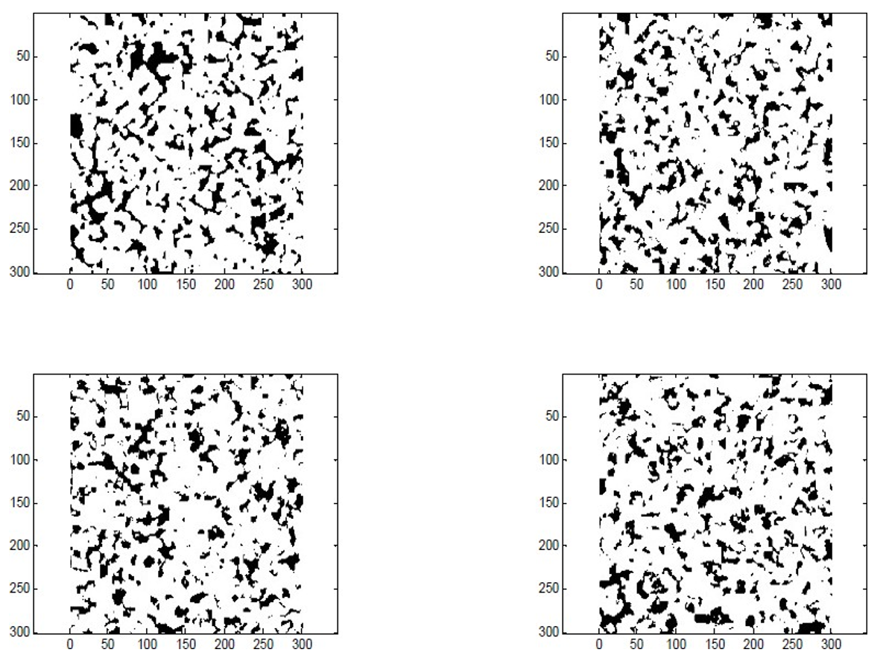
🧮 Atelier interactif 13.2 — Simulations tronquées : TGS et PGS
Un seul atelier pour les deux variantes (bouton de bascule). En TGS, un seul champ gaussien \(Y_1\) : le patron de codage se réduit à des seuils sur \(Y_1\) (bandes verticales). En PGS, deux champs \(Y_1, Y_2\) : le patron est une carte 2D du plan \((Y_1, Y_2)\), qui autorise des relations spatiales bien plus riches. Dessinez le patron à la main (cliquez-glissez) : le champ de faciès se recode instantanément. Observez qu’en TGS deux faciès non adjacents ne peuvent jamais se toucher, alors qu’en PGS on peut imposer qu’un faciès en enveloppe un autre.
13.2 Modélisation de faciès basée sur des objets
La modélisation basée sur des objets représente les unités géologiques sous la forme de géométries paramétrées, plutôt que d’attribuer directement une catégorie à chaque cellule du modèle. Elle se distingue ainsi des approches pixelisées ou par cellules, comme les simulations fondées sur des indicatrices et certaines méthodes multipoints. Les méthodes basées sur les processus constituent une famille apparentée, mais distincte : elles cherchent à reproduire les mécanismes de formation ou d’évolution des structures géologiques, plutôt qu’à placer directement des objets dont la géométrie est prescrite.
Dans une approche par objets, des formes représentant des corps géologiques sont introduites successivement dans un faciès de fond. Leur position, leur orientation, leurs dimensions et leur géométrie sont tirées de distributions définies à partir des connaissances géologiques et des données disponibles. Le processus se poursuit jusqu’à satisfaire des critères tels que les proportions de faciès visées, les règles d’interaction entre les objets et le conditionnement aux observations.
Les objets peuvent représenter, par exemple, des chenaux, des lobes, des dunes, des lentilles, des veines ou des corps intrusifs. Leur paramétrisation s’appuie généralement sur des observations d’affleurements, des environnements actuels, des données sismiques ou des modèles conceptuels du système géologique étudié.
L’intérêt principal de cette approche réside dans sa capacité à reproduire explicitement la géométrie et la continuité des corps géologiques. Les réalisations peuvent présenter des limites nettes, des formes curvilignes, des rapports particuliers entre longueur, largeur et épaisseur, ainsi que des règles de superposition, d’érosion ou d’intersection. Ces caractéristiques sont difficiles à contrôler à partir des seules statistiques à deux points utilisées par les méthodes géostatistiques classiques.
Le réalisme visuel ne garantit toutefois pas que le modèle soit géologiquement ou statistiquement adéquat. Les résultats dépendent fortement du choix des familles d’objets, de leurs paramètres géométriques et des règles qui régissent leurs interactions. Le conditionnement à des données nombreuses peut également devenir difficile, puisqu’un objet doit généralement être déplacé, redimensionné ou rejeté lorsqu’il contredit une observation.
La présente section expose les principes de base de la modélisation par objets, ses principaux paramètres, ses méthodes de conditionnement et ses limites, sans chercher à couvrir l’ensemble de ses variantes.
Concepts
Le principe consiste à imposer directement la géométrie des corps géologiques. On part d’un faciès de fond, puis on dépose des objets paramétrés jusqu’à atteindre les proportions visées. Les objets récents recoupent les plus anciens, ce qui reproduit des relations de superposition réalistes. La vraie difficulté réside dans le conditionnement aux données, qui contraint le placement des objets.
Le modèle booléen
Le cadre le plus courant est le modèle booléen (Boolean model), également appelé processus ponctuel marqué (marked point process). On tire d’abord des points dans l’espace selon un processus de Poisson d’intensité \(\lambda\) : ces points, les germes, déterminent l’emplacement des objets. À chaque germe \(\mathbf{x}_i\), on attache un objet \(A_i\), un compact (chenal, lentille, ellipsoïde), tiré indépendamment selon la même loi de forme. L’ensemble simulé est l’union de ces objets translatés sur leurs germes, \[ X = \bigcup_i \tau_{\mathbf{x}_i} A_i, \] où \(\tau_{\mathbf{x}_i}\) est la translation au point \(\mathbf{x}_i\). Les objets peuvent se recouper; l’espace se partage alors en deux phases, les objets et le faciès de fond qui les entoure (Figure 13.12).
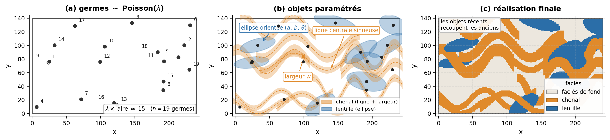
Le modèle dépend de deux jeux de paramètres. L’intensité \(\lambda\) du processus de Poisson détermine le nombre d’objets, donc la proportion du faciès de fond. La loi des objets décrit la distribution de leurs formes, de leurs tailles et de leurs orientations. On la calibre sur l’interprétation géologique : largeur et sinuosité des chenaux mesurées sur des analogues d’affleurement, épaisseur des lentilles, direction du paléocourant.
Conditionnement aux données
Le conditionnement aux forages se fait par acceptation–rejet : on génère des réalisations non conditionnelles et on ne conserve que celles qui respectent les faciès observés. Tant que peu d’objets sont contraints, cela reste praticable. Mais dès qu’un même objet doit recouper plusieurs points imposés, ou que la densité de forages augmente, le taux de rejet explose et l’algorithme converge très lentement, voire pas du tout. C’est la faiblesse majeure de l’approche, et la raison pour laquelle on lui préfère parfois les méthodes par cellules quand les données abondent.
La modélisation par objets produit donc des géométries nettes et géologiquement réalistes, difficiles à obtenir autrement, mais au prix d’un conditionnement délicat. Elle convient surtout aux contextes où les corps ont des formes bien identifiées et où les données restent rares, par exemple un réservoir fluviatile reconnu par quelques puits.
🧮 Atelier interactif 13.3 — Modélisation par objets : chenaux et lentilles
Déposez des chenaux (rubans sinueux) et des lentilles (ellipses) sur un fond argileux, et réglez leur géométrie (nombre, largeur, sinuosité, longueur d’onde, pente, taille des lentilles). On obtient des formes réalistes — chenaux sinueux qui se recoupent, lentilles — que les méthodes pixel (SIS, TGS/PGS) reproduisent difficilement.
13.3 Modélisation de faciès par simulation multipoints
Les méthodes de simulation multipoints (Multiple-Point Statistics, MPS) ont été développées pour représenter des structures spatiales qui ne sont pas suffisamment décrites par les statistiques à deux points. Un variogramme mesure la dépendance entre les valeurs prises en deux positions séparées par un vecteur donné. Il renseigne ainsi sur la portée, l’anisotropie et l’intensité de la continuité spatiale, mais pas directement sur l’organisation conjointe de plusieurs points.
Cette limite est illustrée à la Figure 13.13. Trois champs de faciès présentant des géométries nettement différentes peuvent produire des variogrammes expérimentaux très semblables dans leurs directions principales. Des structures distinctes peuvent donc partager des statistiques à deux points comparables sans présenter la même connectivité, la même géométrie ni la même organisation spatiale.
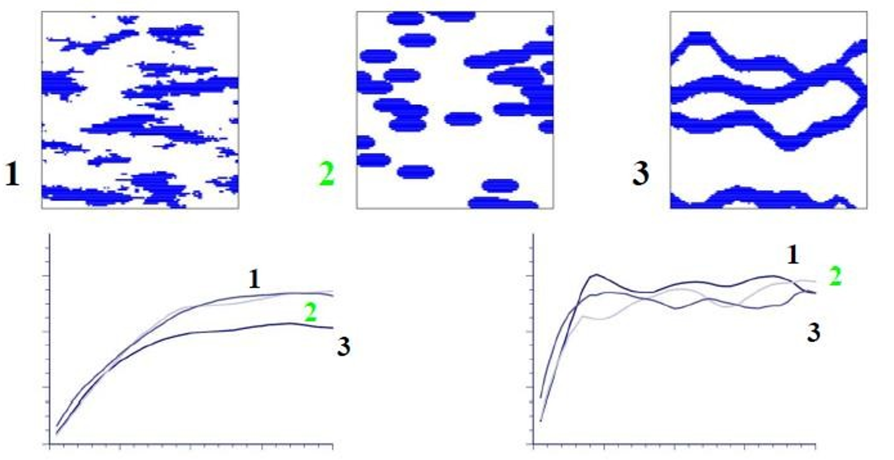
Les méthodes multipoints décrivent plutôt la fréquence d’apparition de configurations formées par plusieurs cellules. Cette information est extraite d’une image d’entraînement (training image, TI), qui représente un modèle conceptuel de l’organisation spatiale attendue. La TI ne constitue pas nécessairement une reproduction du site étudié : elle doit surtout représenter les géométries, les proportions, les relations entre faciès et les styles de continuité jugés plausibles.
En parcourant l’image d’entraînement à l’aide d’un gabarit spatial, on recense les configurations de faciès observées et leur fréquence. Ces statistiques multipoints permettent notamment de représenter des formes curvilignes, des objets connectés, des terminaisons, des bifurcations ou des relations spatiales entre plusieurs unités, qui ne sont pas déterminées par le seul variogramme.
Les méthodes MPS sont particulièrement utiles lorsque les propriétés importantes du modèle concernent la géométrie et la connectivité des faciès, lorsque des structures différentes présentent des statistiques à deux points similaires, ou lorsqu’aucun modèle géométrique paramétrique simple ne permet de représenter adéquatement l’organisation géologique. Leur pertinence dépend toutefois fortement de la qualité et de la représentativité de l’image d’entraînement.
Principe général : reproduire les motifs d’une image d’entraînement
L’image d’entraînement peut provenir d’une interprétation géologique, d’un analogue, d’une carte, d’une image de télédétection, d’un modèle fondé sur des objets ou d’une simulation de processus. Elle fournit un exemple exhaustif du type d’organisation spatiale que l’on souhaite reproduire, mais elle n’est généralement pas conditionnée aux données du site.
La simulation est ensuite construite sur une grille cible, cellule par cellule ou par groupes de cellules. À chaque étape, la configuration déjà connue autour de la position à simuler est comparée aux motifs observés dans la TI. La valeur attribuée provient de la distribution conditionnelle associée aux configurations similaires.
La réalisation obtenue ne constitue donc pas une copie de l’image d’entraînement. Elle représente une nouvelle configuration qui respecte les données de conditionnement tout en reproduisant, de manière statistique, les motifs et les relations spatiales présents dans la TI.
Méthode 1 : la simulation point par point (pixel par pixel)
La simulation multipoints, point par point, construit le modèle séquentiellement, un emplacement à la fois, à partir des informations déjà simulées dans un voisinage local. À chaque nouveau point, on prend la configuration (le pattern) déjà présente autour de lui et on cherche dans la TI les motifs semblables. De ces motifs, on tire une loi conditionnelle empirique pour la catégorie à simuler. Le processus se décrit ainsi.
- Initialisation du modèle.
Le champ simulé démarre avec les valeurs connues (données observées) et des cellules encore vides.
- Définition du voisinage de simulation.
Pour un point non simulé, on considère un voisinage structuré (fenêtre ou gabarit) qui contient les valeurs déjà simulées, utilisées comme condition.
- Recherche de motifs similaires dans la TI.
On compare le voisinage partiellement rempli à toutes les occurrences semblables de la TI. On repère ainsi les positions où le motif correspond, exactement ou à une tolérance près.
- Construction de la distribution conditionnelle.
Des occurrences repérées, on extrait la catégorie présente au centre du motif dans la TI. La distribution des catégories possibles approche la loi conditionnelle multipoints.
- Attribution d’une catégorie.
On tire une catégorie au hasard selon cette loi empirique, et on l’attribue au point courant.
- Répétition séquentielle.
On répète pour tous les points du domaine, selon un chemin de visite (souvent aléatoire), jusqu’à ce que la grille soit remplie.
La Figure 13.14 illustre la méthode pixel par pixel dans un cas simple. On veut simuler le faciès du carré rouge. On cherche dans la TI les occurrences où la même configuration de trois faciès déjà simulés apparaît autour d’un point, et on relève la catégorie du centre de chacun d’eux. Si le motif apparaît 7 fois dans la TI, dont 2 avec un centre bleu et 5 avec un centre jaune, la loi conditionnelle estimée est \(\hat p(\text{bleu}) = 2/7 \approx 29\,\%\), \(\hat p(\text{jaune}) = 5/7 \approx 71\,\%\), \(\hat p(\text{vert}) = 0\). On tire alors le faciès du point selon cette loi. Sur une vraie image d’entraînement, le décompte porte sur bien plus de répliques, ce qui stabilise les proportions.
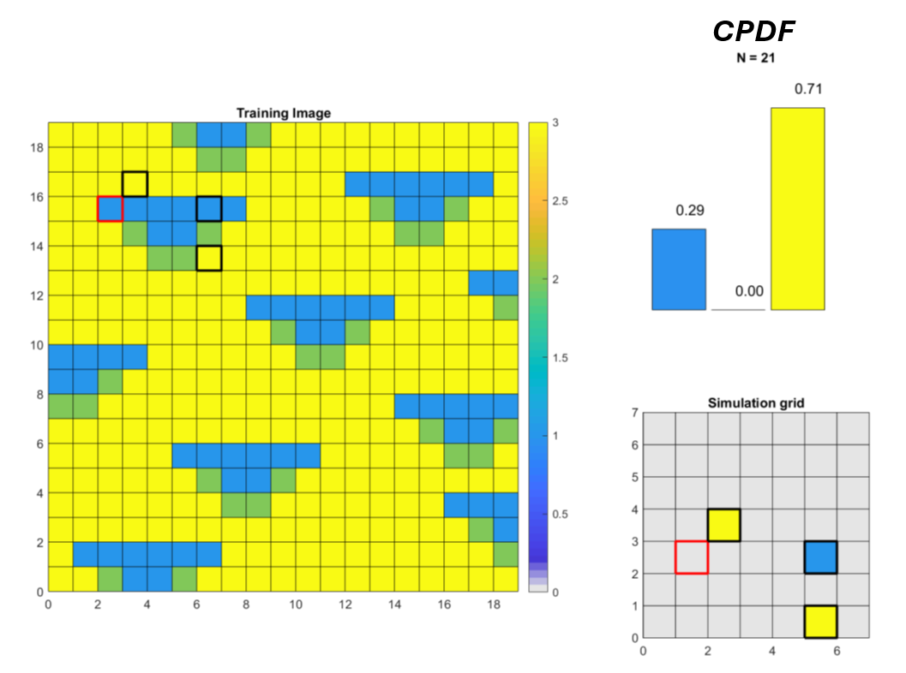
La méthode pixel par pixel suppose que la TI fournisse suffisamment d’exemples pour représenter les motifs de voisinage rencontrés. Quand le motif recherché est absent ou trop rare, deux stratégies : réduire la taille du voisinage pour augmenter les chances de trouver des occurrences (au prix d’une perte d’information contextuelle); ou autoriser des correspondances approximatives (distance de similarité non nulle), au prix d’un compromis entre fidélité géologique et robustesse.
L’approche est conceptuellement simple et fonde l’algorithme SNESIM (Strebelle 2002), qui stocke au préalable les configurations de la TI dans un arbre de recherche (search tree) pour accélérer la recherche. Elle peut devenir coûteuse quand la TI est importante ou les motifs rares. On passe alors au Direct Sampling (Mariethoz, Renard, et Straubhaar 2010) : une simulation point par point qui parcourt la TI selon un chemin aléatoire et s’arrête au premier motif dont la distance au voisinage tombe en deçà d’un seuil, ce qui évite de balayer toute la TI.
Méthode 2 : la simulation par morceaux (patch-based)
La simulation multipoints par morceaux reproduit les structures en copiant-collant des blocs (patchs) extraits de la TI, plutôt que de simuler pixel par pixel. Elle convient aux objets géologiques à formes continues ou à textures complexes, difficiles à générer point par point. Il y a deux grandes variantes : FilterSim (Zhang, Switzer, et Journel 2006), qui décrit chaque patch par un jeu de filtres avant de le comparer au voisinage, et l’image quilting (Efros et Freeman 2001), qui assemble les patchs en cherchant une couture optimale sur leur recouvrement. La démarche générale se déroule ainsi.
Définition d’un ensemble de patchs. On extrait de la TI des blocs de taille fixe (par exemple 8×8 ou 16×16 pixels), qui serviront de motifs de référence.
Caractérisation des patchs. Chaque patch est décrit par des mesures spatiales (textures, gradients, statistiques locales) pour faciliter la comparaison (Figure 13.15).
Regroupement des patchs. On regroupe les patchs similaires (clustering) pour accélérer la recherche de motifs compatibles.
Simulation par collage adaptatif. Au remplissage de la grille, on compare le voisinage déjà simulé aux patchs candidats, on choisit le patch qui minimise une mesure de dissimilarité, et on le colle à l’emplacement courant en conservant les pixels déjà simulés.
Gestion du recouvrement. Pour éviter les artefacts aux frontières des patchs, certaines variantes utilisent des zones de transition lissées, un chemin de coupure optimal (méthode image quilting) ou une fusion statistique locale.
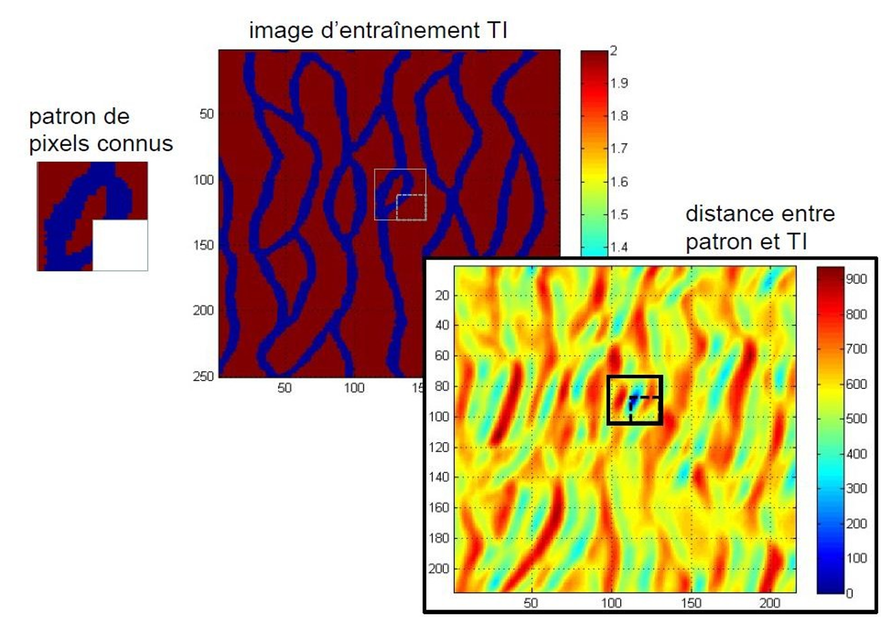
Les méthodes par patchs ont plusieurs atouts (Figure 13.16). Elles reproduisent très fidèlement les motifs structuraux de la TI, ce qui en fait un outil efficace pour les géométries complexes. Elles sont robustes pour les architectures à grande échelle, où la continuité des objets compte. Et elles s’adaptent bien aux textures non stationnaires ou multi-échelles, car les patchs captent directement les variations locales de structure. Elles ont aussi une limite nette : des discontinuités peuvent apparaître aux jonctions entre patchs si la fusion n’est pas optimale. La qualité de la transition dépend beaucoup de la taille des patchs, de leur similarité avec le voisinage et de la technique de couture; une fusion inadéquate laisse des « coutures » visibles, qui nuisent au réalisme.
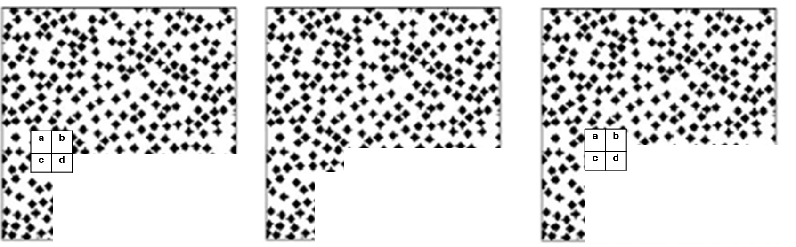
Exemples d’images d’entraînement et de réalisations
Les exemples qui suivent donnent un aperçu de la diversité des structures qu’une simulation multipoints peut reproduire à partir d’une image d’entraînement. Celle-ci vient soit d’une interprétation 2D (carte satellite, photo d’affleurement), soit d’un modèle d’objets simulé en 3D (Figure 13.17). Selon le motif visé, on obtient des chenaux sinueux, des réseaux dendritiques, des réseaux de fractures ou des textures rocheuses. Les derniers exemples illustrent deux propriétés importantes : une même image d’entraînement produit des réalisations toutes différentes mais statistiquement équivalentes (Figure 13.23), et la grille simulée peut dépasser la taille de l’image d’entraînement (Figure 13.24) ou faire varier localement l’orientation et la taille des motifs (Figure 13.26).
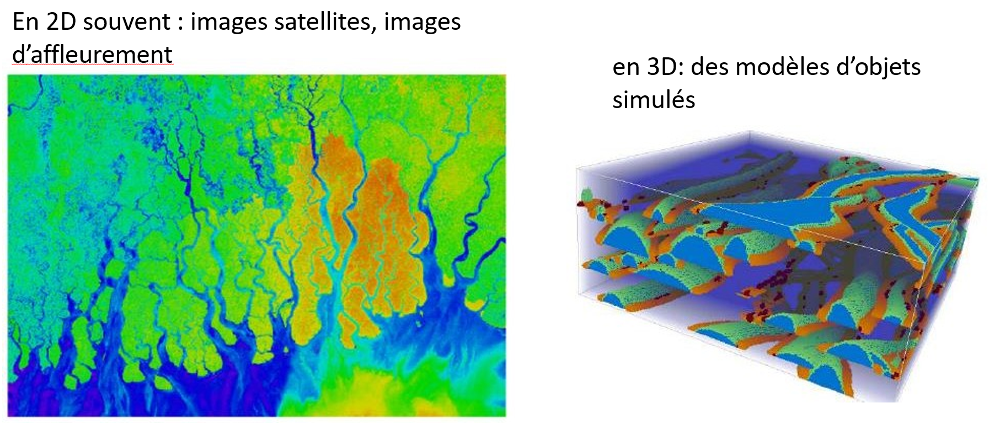
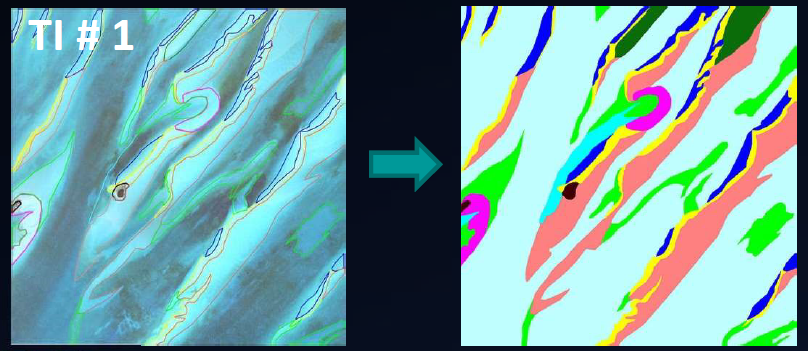
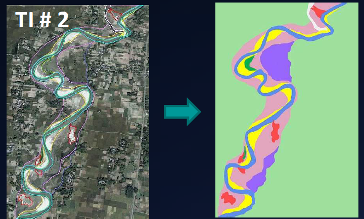
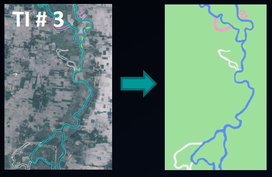
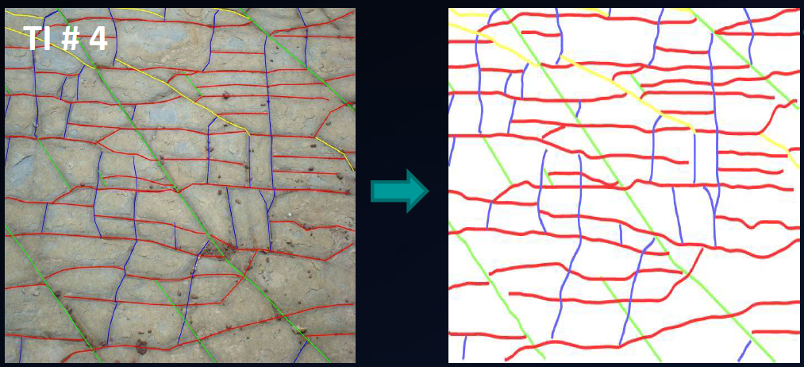
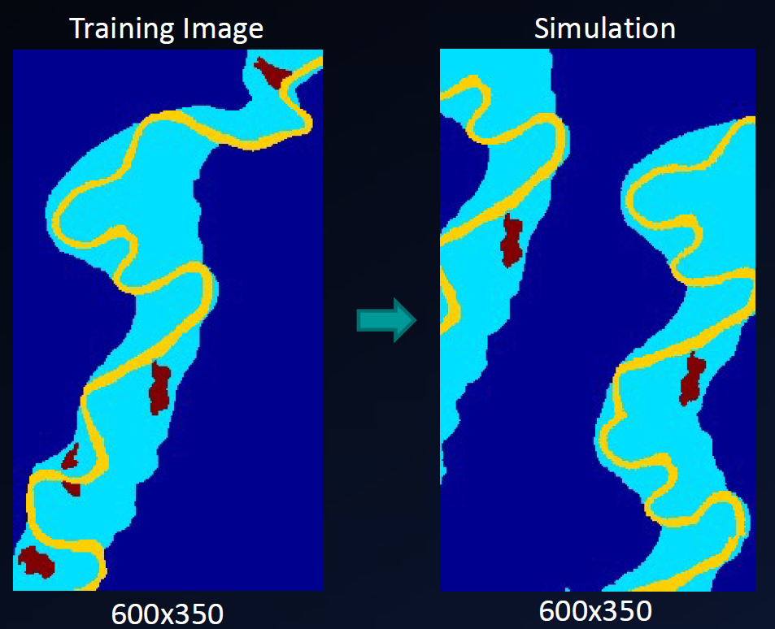
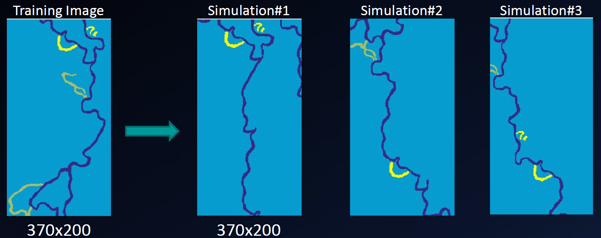
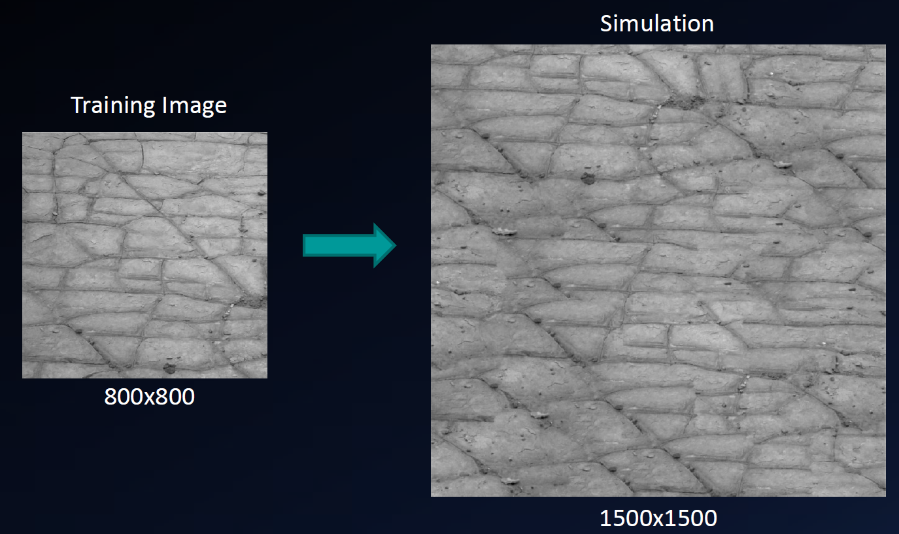
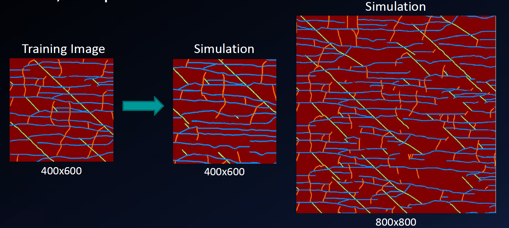
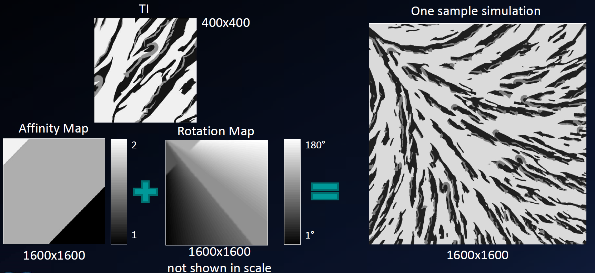
🧮 Atelier interactif 13.4 — Animation MPS : DeeSse et FilterSim
Deux familles d’algorithmes multipoints, à comparer via le bouton de bascule. DeeSse (échantillonnage direct, par point) : pour chaque pixel d’un chemin aléatoire, on cherche dans la TI un emplacement dont le voisinage correspond aux voisins déjà simulés, puis on recopie la valeur centrale. FilterSim (par patch) : la grille se remplit par morceaux, chaque patch étant choisi dans la TI pour raccorder au mieux les bords déjà placés. Plusieurs images d’entraînement au choix, inspirées des motifs classiques de la littérature MPS (chenaux sinueux à la Strebelle, méandres, lentilles, disques, fractures, strates plissées). Lancez l’animation et observez la réalisation reproduire les motifs.
13.4 Exemples d’application des méthodes de simulation de faciès
Aucune méthode ne l’emporte dans tous les cas. Le choix entre SIS, TGS/PGS, modélisation par objets et MPS dépend de trois choses : la nature des relations spatiales à reproduire, la disponibilité d’une image d’entraînement représentative, et le compromis voulu entre simplicité de mise en œuvre et richesse géologique. La SIS respecte les proportions globales mais autorise toutes les transitions. La TGS/PGS impose un ordre (ou des règles 2D) de contact entre faciès. La modélisation par objets donne des géométries nettes et réalistes, mais se conditionne plus difficilement. La MPS reproduit des motifs complexes, au prix d’une forte dépendance à l’image d’entraînement.
Le tableau suivant résume ces compromis selon cinq critères.
| Critère | SIS | TGS | PGS | Objets | MPS |
|---|---|---|---|---|---|
| Statistiques exploitées | bivariées (variogrammes d’indicatrices) | bivariées (variogramme latent) | bivariées (deux champs latents) | géométriques (formes d’objets) | multipoints (image d’entraînement) |
| Contrôle des contacts entre faciès | aucun (toutes transitions permises) | ordre imposé (faciès adjacents seulement) | règles 2D (patron de codage) | imposé par la géométrie des objets | imposé par les motifs de la TI |
| Conditionnement aux données | direct (séquentiel) | Gibbs sur le champ latent | Gibbs par cokrigeage | acceptation–rejet, difficile à forte densité | direct (séquentiel) |
| Réalisme géométrique | faible (frontières irrégulières) | modéré | bon | élevé (formes nettes) | élevé (motifs complexes) |
| Données requises | variogrammes d’indicatrices | proportions et variogramme latent | proportions, variogrammes et patron | loi des objets, faciès de fond | image d’entraînement représentative |
Comment déterminer le variogramme de la variable latente gaussienne?
Une difficulté de la TGS réside dans l’identification de la structure spatiale du champ latent. Les données ne sont que des faciès, des variables catégorielles : on n’a donc aucune variable continue pour estimer directement le variogramme du champ gaussien latent. Tout ce qu’on a, ce sont les variogrammes des indicatrices, qui ne fournissent pas un variogramme latent unique. Il faut effectuer quelques manipulations pour relier les variogrammes des indicateurs à la structure latente continue.
Pour contourner l’obstacle, la TGS s’appuie sur une calibration indirecte, fondée sur les probabilités conjointes estimables à partir des faciès. Ces probabilités sont des intégrales de la loi binormale définie par la covariance latente inconnue. La stratégie consiste à ajuster la covariance (ou le variogramme) du champ latent pour que les probabilités binormales collent au mieux aux probabilités expérimentales.
On note \(W(\mathbf{x})\) le faciès observé et \(Z(\mathbf{x})\) le champ gaussien latent, le premier obtenu par troncature du second. Soit \[ p_{ij}(\mathbf{h}) = \mathbb{P}\big( W(\mathbf{x})=i,\; W(\mathbf{x}+\mathbf{h})=j \big) = \mathbb{E}\!\left[ I_i(\mathbf{x})\, I_j(\mathbf{x}+\mathbf{h}) \right] \] la probabilité d’observer le faciès \(i\) en \(\mathbf{x}\) et le faciès \(j\) en \(\mathbf{x}+\mathbf{h}\). Elle s’estime directement : pour chaque séparation \(\mathbf{h}\), on compte les paires \((\mathbf{x}, \mathbf{x}+\mathbf{h})\) où l’on observe à la fois \(W(\mathbf{x})=i\) et \(W(\mathbf{x}+\mathbf{h})=j\), puis on normalise par le nombre total de paires. \(p_{ij}(\mathbf{h})\) est donc une simple fréquence relative observée :
\[ \hat p_{ij}(\mathbf{h}) = \frac{1}{N(\mathbf{h})} \sum_{(\mathbf{x},\,\mathbf{x}+\mathbf{h})} \mathbb{1}\{ W(\mathbf{x})=i \}\,\mathbb{1}\{ W(\mathbf{x}+\mathbf{h})=j \}, \]
où \(N(\mathbf{h})\) est le nombre de paires séparées de \(\mathbf{h}\) et \(\mathbb{1}\{\cdot\}\) la fonction indicatrice. Comme chaque faciès \(i\) correspond à l’intervalle de troncature \([s_{i-1}, s_i]\) du champ latent, \[ W(\mathbf{x})=i \quad \Longleftrightarrow \quad s_{i-1} < Z(\mathbf{x}) \le s_i, \] la probabilité conjointe s’écrit aussi \[ p_{ij}(\mathbf{h}) = \mathbb{P}\left( s_{i-1} < Z(\mathbf{x}) \le s_i,\; s_{j-1} < Z(\mathbf{x}+\mathbf{h}) \le s_j \right). \]
Or cette probabilité se calcule théoriquement comme l’intégrale de la densité binormale définie par la covariance latente \(C(\mathbf{h})\). Pour chaque séparation \(\mathbf{h}\), les probabilités expérimentales \(p_{ij}(\mathbf{h})\) imposent donc une contrainte sur la covariance \(C(\mathbf{h})\). L’objectif est alors d’identifier la covariance \(C(\mathbf{h})\) qui minimise l’écart entre les probabilités théoriques \(p_{ij}(\mathbf{h})\) du modèle binormal et leurs estimations empiriques \(\hat p_{ij}(\mathbf{h})\). La relation entre \(C(\mathbf{h})\) et les probabilités conjointes n’est en général pas inversible analytiquement; on l’ajuste numériquement, sauf dans le cas particulier d’un seuil placé à \(y = 0\), où l’inversion devient directe.
La Figure 13.7 présente le calcul théorique du modèle binormal. La surface colorée est la densité de la loi normale bidimensionnelle du couple gaussien corrélé \((Z(\mathbf{x}), Z(\mathbf{x}+\mathbf{h}))\). Les lignes rouges marquent les seuils \((s_{i-1}, s_i)\) et \((s_{j-1}, s_j)\) des faciès \(i\) et \(j\). La probabilité conjointe \(p_{ij}(\mathbf{h})\) est l’intégrale de cette densité sur le rectangle délimité par ces seuils : \[ p_{ij}(\mathbf{h}) = \iint_{\substack{s_{i-1} < u \le s_i \\[2pt] s_{j-1} < v \le s_j}} f_{Z(\mathbf{x}),Z(\mathbf{x}+\mathbf{h})}(u,v)\,\mathrm{d}u\,\mathrm{d}v, \] où \(f_{Z(\mathbf{x}),Z(\mathbf{x}+\mathbf{h})}(u,v)\) est la densité normale bidimensionnelle de moyenne nulle, de variance unitaire et de covariance \(C(\mathbf{h})\).
La Figure 13.8 présente les probabilités \(p_{ij}(\mathbf{h})=\mathbb{E}[ I_i\, I_j ]\) du modèle TGS considéré (rappel : \(p_1 = \tfrac{1}{3}\), \(p_2 = \tfrac{1}{2}\), \(p_3 = \tfrac{1}{6}\)). Les probabilités de la diagonale décroissent : plus la séparation \(\lVert\mathbf{h}\rVert\) augmente, moins il est probable de tomber sur deux points du même faciès. Hors diagonale, l’inverse : les transitions entre faciès distincts deviennent plus probables avec la distance. Pour \(\mathbf{h} = \mathbf{0}\), on retrouve bien \(p_{ii}(\mathbf{0})=p_i\) pour \(i=1,\ldots,3\), tandis que les probabilités entre faciès différents (\(i \neq j\)) sont nulles. Et lorsque \(\lVert\mathbf{h}\rVert \to \infty\), elles convergent vers \(p_{ij}(\mathbf{h})=p_i\,p_j\).
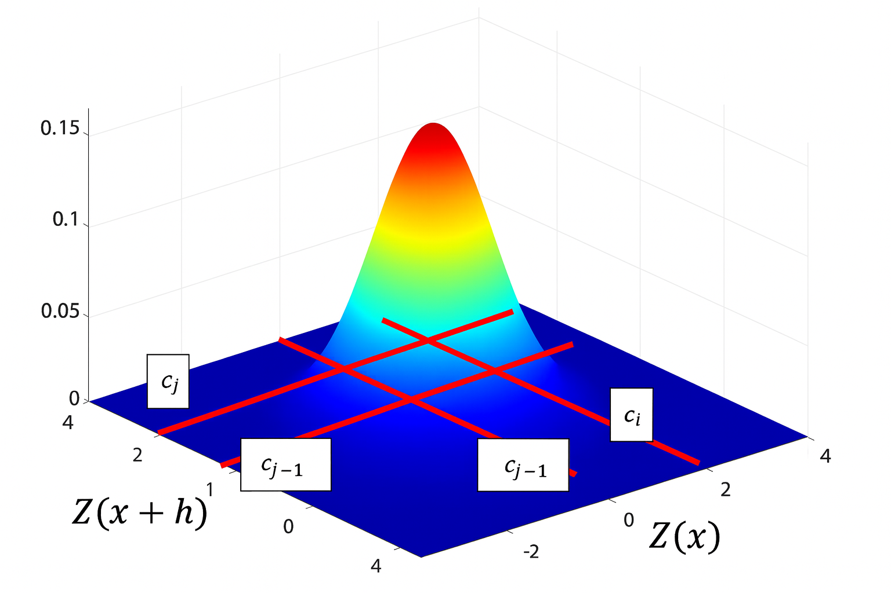
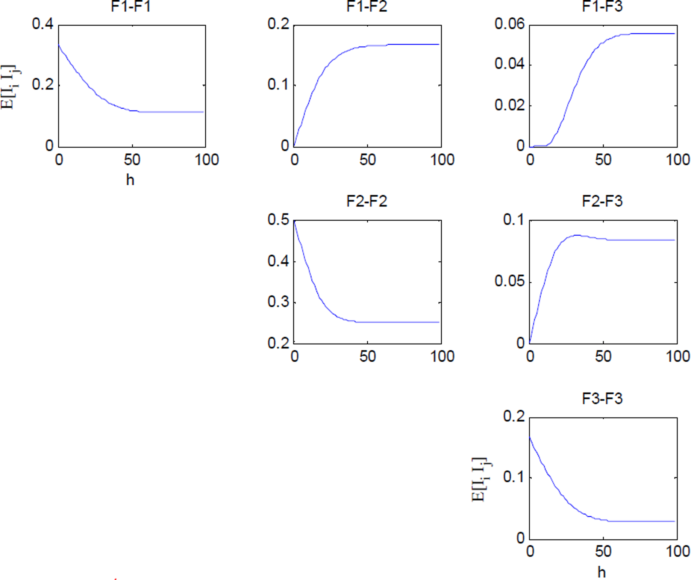